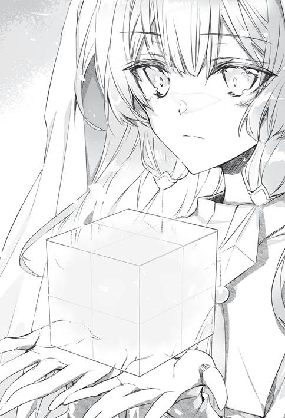

“—อ้อ อยู่นี่เอง”
ในที่สุดคุนอนก็หาคนที่หมายตาพบ
“อ๊ะ รุ่นพี่คุนอน สบายดีไหมคะ”
เซลาลาฟีรานั่นเอง
เธอเลือกหนังสืออยู่ในหอสมุด
ภายในเงียบวังเวง มีชั้นหนังสือเรียงกันสุดลูกหูลูกตา และหนังสือจำนวนมหาศาล
เขาประทับใจตอนมาที่นี่ครั้งแรก
ไม่รู้ว่ามีสักกี่เล่ม ใช้เวลาชั่วชีวิตก็ไม่รู้จะอ่านหมดไหม
ช่วงแรกที่เข้าเรียนเขาเอาแต่อ่านหนังสือ
หลังจากนั้นเมื่อเริ่มวุ่นกับวิธีหาเงินของเพื่อนร่วมรุ่น...โดยเฉพาะสตรีศักดิ์สิทธิ์เรเยส จึงยุติเรื่องนั้นไว้ก่อน เขาอยากหมกมุ่นอยู่ในโลกของหนังสือแบบไม่สนเวลาอีก...แต่ก็มีเรื่องที่อยากทำเยอะแยะ คงไม่มีโอกาสไปอีกพักใหญ่
“สวัสดี สบายดีนะ ดูน่ารักจนแวบหนึ่งนึกว่าภูตหนังสือปรากฏกาย ดีจังเลยที่เป็นคุณหนูเซลาลาฟีรา”
“แหม ดิฉันก็นึกว่าสุภาพบุรุษรูปงามถือไม้เท้าปรากฏตัวขึ้นมา โล่งอกที่เป็นรุ่นพี่คุนอนเหมือนกันค่ะ”
ทันทีที่พบกันก็ทักทายกันแบบนั้น
แต่ต่างฝ่ายแค่พูดไปเรื่อยเปื่อย ปราศจากความหมายใดๆ
เซลาลาฟีราอยู่ในพื้นที่เก็บหนังสือเกี่ยวกับเวทมนตร์พสุธาอย่างที่คิด
หอสมุดแห่งนี้จัดหมวดหมู่แยกตามธาตุไว้ แต่ไม่ได้แบ่งแยกอย่างละเอียด
แต่การจัดหนังสือเยอะขนาดนี้จะใช้เวลาสักแค่ไหนไม่รู้ คนเกลียดการจัดข้าวของและทำความสะอาดอย่างคุนอนไม่อยากคิดถึงเรื่องนั้นเลย
“เมื่อครู่ฉันไปหาคุณหนูเรเยสมา เธอบอกว่าขอหาข้อมูลสักสองสามวันแล้วค่อยเริ่มงานใช่ไหม”
คุนอนพูดพลางเดินเข้าไปหาแล้วมองหนังสือที่เซลาลาฟีราหอบไว้
หนังสือที่ถูกรวบรวมมาล้วนแล้วแต่เกี่ยวข้องกับเวทมนตร์ สมกับที่เป็นโรงเรียนเวทมนตร์ แต่ก็มีหนังสือที่ดูไม่เกี่ยวข้องบ้างเหมือนกัน
อย่างไรก็ตาม หนังสือดูน่าสนใจทั้งนั้นเลย
เขาอยากอ่านหนังสือจริงๆ แต่ตอนนี้ต้องอดใจไว้
“หนังสือเกี่ยวกับการก่อสร้างที่ใช้เวทมนตร์พสุธาสินะ”
“ใช่ค่ะ ดิฉันตั้งใจจะมาหาหนังสือจำนวนหนึ่งกลับไปอ่าน”
“อย่างนั้นเหรอ”
เซลาลาฟีรายังอ่อนด้อยหลายอย่าง
ไม่ว่าด้านความสามารถหรือประสบการณ์ เขาจึงมาตรวจว่าเธอมีวิธีอย่างไรในการทำงานของสตรีศักดิ์สิทธิ์
ดูจากการที่ไม่ยอมถามใครง่ายๆ และพยายามทำอะไรด้วยตัวเอง
นิสัยของเธอเหมาะกับการเป็นจอมเวท
คงอยากทำงานด้วยความรับผิดชอบ
“รู้สึกจะเคยเห็นหนังสือคล้ายๆ กันที่ไหนสักแห่งนะ อย่างเช่น—”
เขาเคยมาที่นี่หลายหน และดูชั้นหนังสือมาหลายรอบ
ถึงจะยังไม่ได้เข้าไปในส่วนลึกของหอสมุด แต่เขารู้จักชั้นหนังสือทางด้านหน้าบ้าง แม้จะเป็นพื้นที่ของธาตุอื่น แต่ก็เคยเดินดูตามความสนใจมาแล้ว ถึงจะมองไม่เห็นก็เถอะ
คุนอนช่วยเซลาลาฟีราหาหนังสือโดยอัตโนมัติ และเริ่มพูดเรื่องที่นึกออกเจื้อยแจ้ว
เรื่องวิธีหาเงินที่นึกออก
“—เอ่อ...รู้สึกจะละรายละเอียดไว้ เลยฟังดูคลุมเครือ...
“คือรุ่นพี่อยากดูการทำงานและฝีมือด้านเวทมนตร์ของดิฉันในตอนนี้ใช่ไหมคะ”
ไอเดียแปลงเป็นเงินทองได้
ดังนั้นคุนอนจึงไม่พูดรายละเอียดทั้งหมดออกมาง่ายๆ และบอกประเด็นสำคัญอย่างคลุมเครือ
บางทีก็คลุมเครือเสียจนไม่ค่อยเข้าใจนัก
แค่รู้ไว้ว่า—จะทำอย่างไร อยากทำอย่างไรก็พอแล้ว
คุนอนประเมินว่าไอเดียที่นึกออกมีความเป็นไปได้ที่จะนำไปสู่งานที่ใหญ่โตมาก
เบล ตัวแทน ‘กลุ่มฉกาจ’ ถึงกับบอกว่า ‘น่าสนใจ’ อย่างเปิดเผย
ดังนั้นก็น่าจะมีอุปสงค์อยู่บ้าง
ขณะนี้สิ่งสำคัญอยู่ที่ฝีมือของเซลาลาฟีรา
เธอจะทำงานให้สตรีศักดิ์สิทธิ์สำเร็จหรือไม่ และผลงานจะอยู่ระดับไหน
เรื่องเหล่านั้นมีความสำคัญ
ประเด็นคือเขามีบางสิ่งมานำเสนอให้เซลาลาฟีรา
ปัญหาอยู่ที่ว่าเจ้าตัวมีความสามารถสักแค่ไหน
ขอตรวจสอบความสามารถก่อนแล้วค่อยบอก
แบบนั้นไม่ถือว่าช้าไปหรอก
“ถ้าทำได้ดี ฉันมีงานให้ทำ พอจะนึกออกแล้วละ”
“หืม...แล้วมันช่วยหาเงินได้เยอะไหมคะ”
“น่าจะได้นะ ตอนแรกอาจไม่เป็นอย่างนั้น แต่ถ้าเข้ารูป-เข้ารอยแล้วจะหาเงินได้ทันที คิดว่าในอนาคตจะกลายเป็นตลาดใหญ่ด้วย”
ถ้าบอกอาจารย์เซออนลีย์ต้องทำได้แน่
คนแบบอาจารย์น่าจะสร้างสิ่งเหลือเชื่อขึ้นได้ในสัปดาห์เดียว
ถ้าทำสำเร็จขึ้นมา เขาตั้งใจจะเขียนจดหมายไปบอก ถ้าเซออนลีย์รู้ต้องพัฒนาไปในแนวทางที่แตกต่างจากพวกคุนอนอย่างแน่นอน
กรณีที่เจ้าตัวถูกใจไอเดียน่ะนะ
—แต่ก็ไม่มีอะไรต้องเป็นห่วง
คุนอนรู้จักอาจารย์ดี มั่นใจว่าอาจารย์ต้องถูกใจแน่นอน อาจารย์จะไม่สนใจก็ต่อเมื่อเคยคิดค้นมาก่อนแล้ว
ได้แต่ภาวนาให้ไม่เป็นอย่างนั้น
“ถ้ารุ่นพี่คุนอนยอมช่วย ดิฉันก็คงจะรู้สึกอุ่นใจมาก
“โดยส่วนตัวดิฉันไม่มีปัญหา แต่ไม่รู้ว่ารุ่นพี่เรเยสจะอนุญาตให้ไปดูรึเปล่านะคะ”
เพราะสิ่งที่จะสร้างคือเรือนกระจกลับใต้ดิน
ในเมื่อเป็นความลับจึงจำกัดคนที่รู้
แล้วคนนอกอย่างเขาจะได้เข้าไปในสถานที่ลับแบบนั้นเหรอ
“เดี๋ยวฉันจะไปขอร้องอย่างสุดหัวใจเลย”
“ขอร้องอย่างสุดหัวใจ อย่างนี้นี่เอง ใช้วิธีที่ตรงไปตรงมาสินะ”
“—ว่าแต่เซลาลาฟีราเป็นยังไงบ้าง”
หลังแยกกับเซลาลาฟีรา
คุนอนถือโอกาสยืมหนังสือ และทำธุระเล็กน้อยก่อนเตรียมตัวกลับ
แต่เจอใครบางคนเข้าพอดี
องค์ชายลำดับสองของจักรวรรดิเออร์เซียน จีโอเอริออน ฮู ลูแวน เออร์เซียน
รุ่นพี่ในชั้นเรียนระดับสองที่รู้จักกันในนามองค์ชายเพลิงคลั่ง
เขาเข้ากับคุนอนได้ดีเหลือเชื่อ รู้จักกันไม่นานก็สนิทสนมและเป็นเพื่อนกันมาตลอด
ตอนนี้ยังคงกินมื้อค่ำด้วยกันเป็นระยะจึงได้พบกันบ่อยพอสมควร แม้จะไม่บ่อยเท่าตอนอยู่ปีหนึ่งก็เถอะ
แต่ไม่ได้เจอกันในโรงเรียนมานานมาก
เช่นเดียวกับกัสอีส กาดันซาส และอิลฟี วอไรล์ เพื่อนควบคนคุ้มกันที่อยู่ด้วยกัน
“ยังบอกอะไรไม่ได้หรอก แต่เธอเป็นคนขยัน คิดว่าไม่เป็นไรนะ”
เซลาลาฟีราเป็นลูกพี่ลูกน้องของจีโอเอริออน
พูดง่ายๆ ว่าตระกูลของเธอเป็นชนชั้นสูงระดับสูง แต่สถานะไม่สำคัญนักในดีราซิก จึงไม่ใช่เรื่องที่ต้องสนใจ
คุนอนถูกจีโอเอริออนไหว้วานให้ช่วยดูแลเธอ
นั่นเป็นเหตุผลหนึ่งที่ทำให้คุนอนรู้จักกับเซลาลาฟีรา
“ดูเหมือนพวกรุ่นพี่จะถูกใจเธอด้วย ดังนั้นต่อให้เกิดปัญหาที่เกินกำลังผม ก็น่าจะมีคนให้พึ่งพาเยอะอยู่ ทั้งที่เพิ่งเข้าเรียนได้แค่เดือนเดียวเอง
“แบบนี้เรียกว่าคนน่าคบสินะ อำนาจสุภาพสตรีที่ดีเยี่ยมของเธอคงมีประโยชน์ต่อการคบหาเพื่อน”
อำนาจสุภาพสตรี
ถึงจะไม่เคยได้ยินคำนี้มาก่อน แต่ก็ใช่ว่าจะไม่เข้าใจความหมาย
“งั้นเหรอ ฉันไม่ได้พบเธอมาสักระยะแล้ว เห็นบอกว่ายุ่งมากขึ้น”
“อ๊ะ ผมว่ายุ่งจริงๆ นะ หลายๆ เรื่องเลย”
“—หมกมุ่นกับเวทมนตร์แล้วเหรอ”
“—ใช่ครับ และจากนี้ไปก็น่าจะมากขึ้นด้วย”
หลังจากทิ้งช่วงเล็กน้อย ทั้งคู่ก็พากันยิ้ม
“งั้นต่อไปก็น่าจะยุ่งยิ่งขึ้น”
“นั่นสินะ ต้องเป็นอย่างนั้นแน่นอน”
พวกเขาคุยกันพลางเดินผ่านประตูโรงเรียน
ได้เวลากลับบ้านแล้ว
“ท่านจีโอ ท่านจีโอ”
อิลฟีขยับเข้ามาใกล้ กระซิบข้างหูจีโอเอริออน
“อยากกินของหวานรึเปล่าคะ ฉันอยากกินจังเลย—”
“...”
จีโอเอริออนมองเธอด้วยแววตาเย็นยะเยือก
แต่เธอไม่หวาดหวั่นต่อเรื่องแค่นั้น
“กาสก็บอกว่าอยากกินค่ะ”
“หือ?”
เมื่อถูกเอ่ยถึงกะทันหัน
“อ้อ นั่นสินะ อยากกินจังเลย—”
เขาพูดแบบนั้นอย่างรำคาญด้วยเสียงเรียบๆ
“ที่สำคัญท่านจีโอจะแวะร้านของเบ็ดเตล็ดไม่ใช่เหรอ”
“ใช่แล้ว สต็อกหมึกเหลือน้อย สต็อกหัวปากกาก็มีไม่มากนัก ได้ยินว่าอยากได้ตุ๊กตาเพลิงตะวันตัวใหม่ด้วย”
ตุ๊กตาเพลิงตะวันคือตุ๊กตาที่ใช้เป็นเป้าซ้อมเวทมนตร์อัคคี
มันทำจากสสารที่ลุกไหม้ยาก จึงเผาได้ตามใจชอบ
—ใช้ในการฝึกเวทมนตร์ของจีโอเอริออน
เขางานยุ่งเป็นประจำ ถึงกระนั้นก็ไม่ว่างเว้นในการฝึกฝนตัวเอง
“ไหนๆ จะแวะแล้ว น่าจะมีเวลาดื่มชาสักแป๊บนะ แค่เลี้ยงรุ่นน้องที่วานให้ช่วยดูแลญาติไม่มีอะไรเสียหายสักหน่อย”
ข้ออ้างโจ่งแจ้งมาก
“...อย่างที่ได้ยิน มีเวลารึเปล่า คุนอน”
“ไม่มีปัญหาครับ วันนี้กำลังจะกลับบ้านอยู่แล้ว”
ถึงจะไม่อยู่ในกำหนดการ แต่เรื่องบังเอิญแบบนี้น่าดีใจออก
พวกคุนอนคุยกันเรื่องเซลาลาฟีราเป็นหลัก ระหว่างเพลิดเพลินกับการซื้อของและดื่มชาไม่นานนัก
หลังจากนั้นสองวัน
คุนอนกับเซลาลาฟีราอยู่ที่มุมหนึ่งในเขตโรงเรียน
เนื่องจากหาวิธีสร้างห้องใต้ดินได้แล้ว จึงมาฝึกขุดหลุม
สถานที่นี้ไม่มีใครมา คุนอนขออนุญาตใช้งานจากอาจารย์คีเวนแล้ว
—“ขุดหลุมแล้วกลบให้เรียบร้อยด้วยล่ะ อย่าทิ้งยาเวทมนตร์เหลือใช้ วัตถุดิบใช้การไม่ได้ ของเหลวปริศนา วัสดุเวทไร้ประโยชน์ รวมไปถึงของบางอย่างที่หมดอายุการใช้งานแล้วเป็นอันขาด ให้สัญญากับครูก่อนนะ”
...เหมือนเคยเกิดเรื่องมาก่อน แต่ไม่บอกว่าเป็นอะไร
ถึงจะโดนกำชับอย่างถี่ถ้วน แต่ก็ได้รับอนุญาต
เวทมนตร์พสุธาขั้นต้นที่ใช้คือ ‘เคลื่อนทราย’
เป็นเวทมนตร์พื้นฐานที่ทำให้พื้นดินพูนหรือยุบได้
ในหนังสือลงวิธีสร้างห้องโดยใช้เวทมนตร์ชนิดนี้ไว้
‘เคลื่อนทราย’ เป็นเวทมนตร์เบื้องต้น เปรียบได้กับ ‘บอลวารี’ ของธาตุน้ำ เพราะอย่างนั้นเซลาลาฟีราเลยได้ศึกษามาแล้ว
ถือเป็นเวทมนตร์แรกที่ได้เรียนรู้
—แต่ตอนนี้เธอรับรู้ถึงระดับที่แท้จริงของชั้นเรียนระดับพิเศษแล้ว จึงตระหนักว่าที่จริงตนแทบจะไม่ได้เรียนรู้อะไรเลย
การเรียนรู้มีความหมายลึกซึ้งกว่านั้น
ตอนนี้ ‘แค่ใช้ได้’
“เอ้า ลองทำดูสิ เดี๋ยวฉันจะคอยดู”
“ค่ะ”
“แต่ฉันมองไม่เห็นหรอกนะ ฮะๆ ๆ”
เซลาลาฟีราใช้ ‘เคลื่อนทราย’ คว้านพื้นดินเป็นรูปสี่เหลี่ยมจัตุรัสโดยไม่รอให้คุนอนพูดจบ
เธอทำซ้ำแล้วซ้ำอีกหลายรอบ
จากทรงลูกบาศก์ เป็นแท่งสี่เหลี่ยม และทรงกระบอก
เธอตั้งหน้าตั้งตาฝึกซ้อมครั้งแล้วครั้งเล่าจนได้รูปทรงที่น่าพอใจ
—แล้วเซลาลาฟีราก็เริ่มที่จะเข้าใจ
เธอฝึกฝนในพื้นที่แคบๆ บนโต๊ะมาตลอด พอใหญ่ขึ้นความรู้สึกในการใช้จะแตกต่างออกไป ดีแล้วที่มาฝึกตามที่คุนอนบอก
เธอทดลองอะไรหลายอย่างอยู่สักพัก
สุดท้ายก็สร้างบันไดด้วยเวท ‘เคลื่อนทราย’ และสร้างห้องรูปแท่งสี่เหลี่ยมขึ้นใต้ดินได้สำเร็จ
เธอใช้เวท ‘ก่อทราย’ ทำให้ผนังและเพดานดินแข็งพอที่จะไม่พังทลาย
นี่เป็นเวทมนตร์ขั้นต้นที่ทำให้ดินแข็งตัวหรืออ่อนนุ่มได้
ทีนี้เรือนกระจกใต้ดินก็เสร็จสมบูรณ์ น่าจะตรงตามที่สตรีศักดิ์สิทธิ์ต้องการ
“—ใช้ได้แล้วมั้ง”
คุนอนลงไปที่ใต้ดินด้วยเพื่อตรวจสอบว่าแข็งแรงดี
ผนัง เพดาน พื้น
แข็งเป๊กจนไม่น่าเชื่อว่าเป็นดิน แข็งอย่างกับอิฐ ทั้งยังทำให้มีคุณสมบัติกันน้ำเล็กน้อยเพื่อไม่ให้เปราะเมื่อเจอน้ำฝน
แบบนี้คงไม่ถล่มง่ายๆ
“กรณีที่สร้างห้องใต้ดินจำเป็นต้องมีช่องระบายอากาศด้วย แต่รุ่นพี่เรเยสต้องการแค่โครงสร้างง่ายๆ ให้อยู่ตื้นๆ เท่านั้น”
เธอบอกว่าขอประมาณโกดังใต้ดินก็พอ
ความต้องการของเธอคือ
แค่ใช้ปลูกพืชอย่างเดียว ไม่ต้องการคุณสมบัติหรือกลไกเกินความจำเป็น
อยากให้สร้างโดยเร็วมากกว่า
“นี่ คุณหนูเซลาลาฟีรา”
“คะ?”
“ลองสร้างเก้าอี้แถวนี้หน่อย”
“เก้าอี้?”
สองวันมานี้
เซลาลาฟีรากับคุนอนอยู่ด้วยกันเกือบตลอดเวลาตอนอยู่ในโรงเรียน
บางครั้งเขาพูดเรื่องไม่คาดฝัน พอได้ลองทำก็รู้สึกว่าสนุกดี เลยทำตามที่บอกเท่าที่ทำได้
“...แบบนี้เหรอคะ”
ภายในห้องใต้ดินว่างเปล่ารูปแท่งสี่เหลี่ยม
ดินทรงลูกบาศก์พูนขึ้นจากพื้นดินเหมาะที่จะนั่งได้พอดี
“อืม”
คุนอนนั่งลงตรงนั้นพลางมองไปยังมุมห้อง
“อยากได้เตียงริมผนังด้านโน้นนะ”
“ดะ...ได้ค่ะ...”
ถึงจะไม่เข้าใจ
แต่เซลาลาฟีราก็สร้างเครื่องเรือนขึ้นในห้องตามที่คุนอนบอก
ตู้เสื้อผ้า
ชั้นหนังสือ
โต๊ะกับเก้าอี้
โต๊ะเครื่องแป้งซึ่งไม่มีกระจกเงา
ประตู
ผนังกั้นห้อง ห้องอาบน้ำ อ่างอาบน้ำ
กลายเป็นห้องใต้ดินสีดินล้วน มีแต่เครื่องเรือนสีดินอย่างเดียว ช่างจืดชืดเหลือเกิน
“เซนส์ของคุณหนูเซลาลาฟีราน่าสนใจดีนะ เป็นสี่เหลี่ยมหมดเลย”
“ทรงสี่เหลี่ยมสร้างง่ายที่สุดน่ะ...เพราะฉันยังไม่คล่องเท่าไร”
ใช้แต่เวทมนตร์ขั้นต้นสองอย่างจนสร้างห้องแบบนี้ได้
ทุกอย่างเป็นสี่เหลี่ยม
ไม่ว่าจะเป็นเก้าอี้หรือโต๊ะก็เป็นทรงสี่เหลี่ยมล้วนๆ ปราศจากความกลมมนใดๆ
ดูไร้ชีวิตชีวาเหลือเกิน
แต่เธอไม่ได้รังเกียจห้องแบบนี้
ยิ่งเป็นห้องที่สร้างขึ้นด้วยตัวเองยิ่งรู้สึกดีกับมัน
เซลาลาฟีราไม่รู้มาก่อนว่าเวทมนตร์ของตนทำเช่นนี้ได้ แค่เวทมนตร์ง่ายๆ อย่างเดียวก็สร้างห้องได้พอสมควร
ช่วยให้ตระหนักถึงทฤษฎีที่ว่าเวทมนตร์พสุธาเหมาะกับการสร้างสิ่งต่างๆ
“รู้สึกว่าตอนนี้พอจะเข้าใจความเก่งกาจของรุ่นพี่คุนอน และความหมายของเรื่องที่ได้ทำบ้างแล้วค่ะ”
คุนอนศึกษา ‘บอลวารี’...เวทมนตร์ขั้นต้นอย่างไม่ลดละ
ตอนแรกที่ได้ยินเรื่องนั้น เธอข้องใจว่าเหตุใดจึงยึดติดกับเวทมนตร์เดียวถึงขนาดนั้น
ไม่เห็นจะมีโอกาสได้ใช้เวทมนตร์ขั้นต้นสักเท่าไร
—ที่จริงไม่ใช่เลย
เธอพลิกแพลงเวทมนตร์ขั้นต้นอย่างเอาเป็นเอาตายมาตลอดสองวัน
จึงได้ล่วงรู้
เวทมนตร์ที่แท้จริงไม่ใช่แค่ลึกซึ้ง
แต่ถึงขั้นไร้ก้นบึ้งทีเดียว
ยิ่งศึกษาก็ยิ่งรู้สึกว่าน่าสนใจอย่างไม่มีที่สิ้นสุด
ตอนนี้เธอเข้าใจความรู้สึกของคุนอนแล้ว
เซลาลาฟีราชักอยากศึกษาว่ามันทำอะไรได้แค่ไหน
ขนาดเวทมนตร์ขั้นต้นยังทำได้ขนาดนี้ แล้วถ้าเวทมนตร์ทั้งหมดแฝงความเป็นไปได้แบบเดียวกัน—ชีวิตคงจบลงก่อนจะหมดความสนใจเป็นแน่
“ธาตุดินน่าสนใจจริงๆ นะ งานหัตถกรรมคงอยู่ได้ตลอดกาล แถมยังแสดงลักษณะเด่นของแต่ละคนออกมาอย่างชัดเจน รวมไปถึงรสนิยม
“ต่างจากน้ำที่มีข้อจำกัดในการคงสภาพ ในขณะที่จอมเวทธาตุดินอาจยึดติดกับเรื่องรูปลักษณ์มากกว่า
“—ไปทำงานให้คุณหนูเรเยสได้แล้วมั้ง”
“ไม่ต้องฝึกซ้อมแล้วเหรอคะ”
“อืม น่าจะทำงานให้คุณหนูเรเยสได้แล้ว และคงไม่มีปัญหาสำหรับธุระของฉันด้วย”
“คงไม่มีปัญหา?”
เธอหมายถึงงานที่พูดถึงก่อนหน้านี้หรือเปล่านะ
แต่เซลาลาฟีราไม่ถามอะไร เพราะตอนนี้อยากตั้งสมาธิกับงานของสตรีศักดิ์สิทธิ์
นี่เป็นงานที่มีค่าตอบแทนสองล้านเน็กกา และเป็นคำไหว้วานแรกที่ได้รับในฐานะจอมเวท
ต้องมุ่งมั่นหน่อย
“—ดูแล้วไม่น่าจะมีปัญหาค่ะ”
เซลาลาฟีราไปหาสตรีศักดิ์สิทธิ์ในโรงเรียน และกลับบ้านพร้อมกับเธอ
เกือบเย็นแล้ว
หมู่นี้สตรีศักดิ์สิทธิ์โดนกวดขันเรื่องเวลากลับบ้านมากขึ้น และต้องกลับก่อนมืด
บ้านของเธอเป็นคฤหาสน์หลังเล็กในย่านที่พักอาศัยหรูหรา
สวนปกคลุมด้วยต้นไม้ที่ดูมีเอกลักษณ์...พืชทุกชนิดล้วนมีประโยชน์ ไม่ได้ปล่อยให้โตไปตามยถากรรม
พวกเธอไม่คุยกันเรื่อยเปื่อย
แค่ชวนดื่มชาสักถ้วย...ยังไม่มีด้วยซ้ำ
สตรีศักดิ์สิทธิ์นำทางเซลาลาฟีราไปยังมุมหนึ่งในสวนทันที
สถานที่ซึ่งถูกพามาแล้วบอกว่าขอตรงนี้แหละเป็นโรงเก็บอุปกรณ์ทำสวน
เธอต้องการให้สร้างห้องข้างใต้นี้ โดยขออนุญาตเจ้าของกรรมสิทธิ์ตัวบ้านแล้ว จนได้รับความยินยอมให้สร้างห้องใต้ดินเล็กๆ
เซลาลาฟีราลงมือสร้างห้องใต้ดินด้วยเวทมนตร์พสุธาทันที
เป็นห้องสี่เหลี่ยมแบบเดียวกับที่เคยฝึกกับคุนอน
สตรีศักดิ์สิทธิ์บอกว่าขอให้ใช้งานง่าย จะเป็นลักษณะไหนก็ได้ทั้งนั้น
จนได้มาซึ่งห้องสี่เหลี่ยมโล่งๆ ที่ปราศจากเครื่องเรือน
“เข้าท่าแฮะ ขนาดกำลังดีเลย”
—สตรีศักดิ์สิทธิ์ไม่ใส่ใจเรื่องความสวยงามของห้องแต่อย่างใด
ของตกแต่งและเครื่องเรือนดูจะเกะกะเปล่าๆ
เป็นห้องสี่เหลี่ยมแบบเรียบง่ายก็ดีแล้ว
สามารถใช้งานได้กระทั่งมุมห้องเลย
“นี่เป็นแบบอัดสี่เซาะหกตามพื้นฐานในระดับตื้นค่ะ”
แบบอัดสี่เซาะหก
เท่าที่ศึกษามา เป็นพื้นฐานของสิ่งปลูกสร้างใต้ดินระดับตื้นสำหรับเวทมนตร์พสุธา
กรณีที่สร้างห้องในชั้นดินตื้น
อัตราส่วนของดินจะเป็นบีบอัดสี่สิบเปอร์เซ็นต์ และเซาะออกหกสิบเปอร์เซ็นต์
ยิ่งบีบอัดดินจะยิ่งแข็ง
แต่ถ้าแข็งเกินไปก็จะเปราะ
การเปลี่ยนแปลงอุณหภูมิจะทำให้เกิดการแตกร้าว แค่ดูดซับน้ำเพียงนิดเดียวก็ทำให้แตกได้
เมื่อสัมผัสผนัง เพดาน และพื้นตอนนี้จะแข็งเหมือนหิน ถึงกระนั้นก็ใช้อัตราส่วนบีบอัดดินเพียงสี่สิบเปอร์เซ็นต์เท่านั้น
จากนั้นก็เอาหินหรืออิฐมาก่อแบบห้องใต้ดินทั่วไป
แต่สตรีศักดิ์สิทธิ์ต้องการให้ห้องใต้ดินเป็นดินแข็งตัวเท่านั้น
หากไม่นับสถานที่ที่อุณหภูมิมีการเปลี่ยนแปลงเยอะในช่วงระหว่างกลางวันกับกลางคืนอย่างเช่นทะเลทราย
หรือกรณีที่สภาพอากาศเลวร้ายเป็นเวลานาน
การทำแบบนี้น่าจะคงอยู่ได้ประมาณสามเดือน
แต่การบำรุงรักษาเดือนละหนเป็นส่วนหนึ่งของงาน หากไม่เกิดเรื่องไม่คาดฝันคงไม่ถล่มหรือพังทลายง่ายๆ
ทั้งยังป้องกันไม่ให้น้ำฝนและน้ำซึมเข้ามาได้ด้วย
นั่นเป็นเรื่องเฉพาะทาง คงไม่จำเป็นต้องอธิบาย
“แต่ยังไม่ได้ดัดแปลงให้มีคุณสมบัติแบบเรือนกระจกเลย...”
สิ่งที่สตรีศักดิ์สิทธิ์ต้องการน่าจะเป็นเรือนกระจกใต้ดิน
เรือนกระจกควรจะมีคุณสมบัติในการปรับอุณหภูมิด้วย
แต่สตรีศักดิ์สิทธิ์ไม่ได้เรียกร้องขนาดนั้น
“ไม่มีปัญหาค่ะ”
ทันทีที่พูดจบ—ห้องสีน้ำตาลล้วนผิวดินเปลือยก็สว่างขึ้น
“อ๊ะ นี่มัน...”
เซลาลาฟีรานึกขึ้นได้
สิ่งเดียวกับที่เห็นในห้องเรียนของสตรีศักดิ์สิทธิ์
“ ‘เขตแดน’ ค่ะ โอบล้อมห้องไว้แล้ว ทีนี้ห้องใต้ดินก็เสร็จสมบูรณ์”
ใช่ เป็น ‘เขตแดน’ อย่างที่คิด
“รุ่นพี่เรเยส”
“คะ?”
“น่าอิจฉาจัง ดิฉันก็อยากใช้ ‘เขตแดน’ ได้เหมือนกัน”
‘เขตแดน’ คือเวทมนตร์เฉพาะตัวของสตรีศักดิ์สิทธิ์
เดิมทีเป็นกำแพงป้องกันมารสุดแกร่ง
แต่ดูเหมือนจะมีสรรพคุณอื่นด้วย
ใช้ปกป้องดูแลพืชได้
“นี่เป็นพลังที่ติดตัวมาตั้งแต่เกิด ฉันคงแนะนำอะไรให้ไม่ได้หรอก”
ถูกอย่างที่เธอพูด
“แต่ว่า—”
สายตาสตรีศักดิ์สิทธิ์หลุกหลิก
สีหน้ายังเหมือนเดิม
แต่ท่าทางครุ่นคิด
“ตามความเห็นส่วนตัวของฉัน ‘เขตแดน’ น่าจะไม่ต่างจากเวทมนตร์อื่นเท่าไรนัก”
“เอ๊ะ?”
“หมายถึงฉันไม่คิดว่ามันพิเศษอย่างที่ใครๆ พูดกัน
“ยิ่งมีความรู้มากขึ้นก็ยิ่งคิดแบบนั้น
“ก่อนมาโรงเรียนนี้ ฉันรู้แต่วิธีใช้ ‘เขตแดน’ ทั่วไป มีข้อแตกต่างแค่เล็กน้อย แต่ในความเป็นจริง”
สตรีศักดิ์สิทธิ์ชูมือสองข้างขึ้น
พลังเวทมารวมกันตรงกึ่งกลางมือทั้งสองข้าง—ก่อให้เกิดรูปทรงลูกบาศก์เป็นประกายสีทองเล็กๆ ขึ้นตรงนั้น
“สามารถสร้าง ‘เขตแดน’ แบบนี้ได้ด้วย”
“เอ๊ะ...?”
“ ‘เขตแดน’ ทรงสี่เหลี่ยมน่ะ เอ้า”
เมื่ออีกฝ่ายยื่นให้ เซลาลาฟีราก็รับลูกบาศก์เปล่งแสงมาโดยไม่รู้ตัว
มันอุ่นและแข็ง
เหมือนวัตถุ แต่ก็เหมือนไม่ใช่วัตถุ
ช่างเป็นสิ่งที่ประหลาดมาก
นี่คือ ‘เขตแดน’
น่าสนใจจริงๆ
“ฉันทดลองใช้วิธีต่างๆ นานาจนสร้าง ‘เขตแดน’ แบบนั้นได้ ทำให้เป็นรูปทรงอื่นนอกเหนือจากทรงกลมและทรงโดมได้
“อาจเปลี่ยนได้ทั้งรูปทรงและคุณสมบัติเลยนะ”
เซลาลาฟีราพูดอะไรไม่ออก
เพราะรู้สึกเหมือนได้ยินเรื่องเหลือเชื่อ
“แต่เวทมนตร์อื่นๆ ก็เป็นแบบนั้นเหมือนกันไม่ใช่เหรอ น่าจะเป็นเรื่องธรรมดามากกว่านะ”
“อืม...นั่นสินะ”
เธอตกใจเพราะ ‘เขตแดน’ มีการเปลี่ยนแปลง
แต่การเปลี่ยนแปลงของรูปทรงและคุณสมบัติเป็นเรื่องธรรมดาสำหรับเวทมนตร์อยู่แล้ว
“แต่ฉันรู้สึกว่าไม่ควรคิดอย่างนั้นเลย...”
สตรีศักดิ์สิทธิ์
คือบุคคลที่ร่วมต่อสู้และกำราบจอมมารได้ในอดีตกาล
ซึ่ง ‘เขตแดน’ ก็เป็นกำแพงป้องกันเวทมนตร์ที่น่าสะพรึงกลัวของจอมมาร
บัดนี้
สิ่งยิ่งใหญ่ที่ถูกเล่าขานในนิทาน
กลายเป็นลูกบาศก์อยู่ในมือ
“นี่คือพลังที่พระเจ้ามอบให้”
“ใช่ค่ะ”
เป็นอย่างนั้นแน่นอน
“แต่ยุคสมัยได้เปลี่ยนไปแล้ว”
สตรีศักดิ์สิทธิ์พูดเช่นนั้น
พูดอย่างผ่าเผยด้วยใบหน้าไร้ความรู้สึก
“ในยุคปัจจุบัน พระเจ้าต้องพูดแบบนี้แน่ๆ
“ใช้ให้มีประโยชน์มากกว่านี้สิ ใช้พร่ำเพรื่อมากกว่านี้ก็ได้ ก็แค่เวทมนตร์เท่านั้น ใช้เยอะๆ ทำให้มันมีประโยชน์ต่อผู้คนเถอะ
“พระเจ้าผู้ยิ่งใหญ่น่าจะดูความเป็นไปของยุคสมัยออก และแนะนำวิธีใช้ ‘เขตแดน’ สำหรับยุคนี้ให้แน่ๆ เพราะพระเจ้าเป็นตัวตนอันยิ่งใหญ่ ปราดเปรื่อง เปี่ยมไปด้วยเมตตา”
เซลาลาฟีรานึกขึ้นได้
—อ๊ะ เธอคนนี้เป็นเพื่อนรุ่นพี่คุนอนอย่างแน่นอน
เธอคงสะกดความต้องการที่จะพัฒนาเวทมนตร์อย่าง ‘เขตแดน’ เอาไว้ไม่อยู่
ทั้งที่สีหน้าไร้อารมณ์ขนาดนี้
แต่นำคำสอนและความประสงค์ของพระเจ้ามาบิดเบือน ไม่สิ ตีความเฉพาะตนเพื่อรองรับการกระทำในแบบของตน
เธอเชื่อสนิทใจ
ด้วยสีหน้าไร้อารมณ์
และไม่รู้สึกผิด
สมกับเป็นจอมเวทยิ่งนัก ก็แค่อยากศึกษาเวทมนตร์ให้ถ่องแท้เท่านั้นเองนี่นา
แต่ไม่รู้เหมือนกันว่าสมเป็นสตรีศักดิ์สิทธิ์หรือไม่
เพราะฉะนั้นเซลาลาฟีราจึงพยักหน้ารับ
“ไม่ผิดแน่ค่ะ”
ถ้าไปยุ่งเกี่ยวมากไปจะไม่ดี เธอเลยพยักหน้าแบบขอไปที

—สตรีศักดิ์สิทธิ์เรเยส เซนทรานส์
เมื่อหลายปีก่อนเซลาลาฟีราเคยเห็นเธอในงานที่จัดโดยจักรวรรดิเออร์เซียน
เธอถูกเรียกขานว่าสตรีศักดิ์สิทธิ์และได้รับการยกย่อง ทั้งที่อายุรุ่นราวคราวเดียวกับตน
แม้จะยังเด็กแต่ก็ดูสง่าผ่าเผยในที่สาธารณะจนมองไม่ออกว่ายังเป็นเด็ก
เซลาลาฟีราจำได้ว่าตัวเองคิดไปเรื่อยเปื่อย
รุ่นราวคราวเดียวกันจริงหรือเปล่า เธอเป็นคนแบบไหน นิสัยเป็นอย่างไร ชื่นชอบอะไร ปกติทำอะไรบ้าง
ตอนเจอกันในโรงเรียนเวทมนตร์ก็คิดแบบเดิม
ที่จริงไม่เห็นต้องคิดมาก
เธอก็แค่เป็นจอมเวทเต็มตัว
เป็นตัวของตัวเอง ทำตามใจตัวเอง ค้นคว้าเรื่องที่ตัวเองสนใจจนถึงที่สุด
แค่จอมเวทธรรมดาคนหนึ่งเท่านั้น
บ้านใหม่ดูแปลกตาดี
เริ่มจากไม่มีสวน
ไม่มีรั้วจึงไม่มีประตูรั้ว ไม่มีคนคอยเปิดประตูและยามเฝ้าประตู
อยากเข้าบ้านเมื่อไรก็ตามสบาย
กลับบ้านเมื่อไรก็ตามใจ
เปิดประตูเข้าไปได้ตามสะดวก
เมื่อเดินขึ้นบันไดแคบๆ ไม่มีราวจนถึงห้องหนึ่งบนชั้นสาม
แผ่นป้ายติดหน้าประตูเขียนบอกหมายเลข 303
เธอเสียบกุญแจเข้าไปแล้วบิด
“กลับมาแล้วค่ะ”
นี่คือที่อยู่ปัจจุบันของเซลาลาฟีรา
อพาร์ตเมนต์ราคาถูกซึ่งนักเรียนโรงเรียนเวทมนตร์จำนวนมากเช่าอยู่ ส่วนใหญ่เป็นนักเรียนระดับสองและระดับสาม
ส่วนชั้นเรียนระดับพิเศษทางโรงเรียนจะออกค่าเช่าให้
ราคาแพงแค่ไหนก็ไม่โดนต่อว่า ดังนั้นจึงไม่มีเหตุผลที่จะเลือกบ้านราคาถูก—
“ฮะๆ ๆ—โอ๊ะ กลับมาแล้วเหรอ คุณหนูเซลาลาฟีรา”
“อ๊ะ คุณหนู ขออภัยที่ไม่ได้ออกไปต้อนรับค่ะ”
ทันทีที่เปิดประตูเข้าไปก็เจอห้องนั่งเล่นกว้างพอประมาณ
คนที่นั่งอยู่ที่โต๊ะคือคุนอน
“ไม่เป็นไรหรอก ตามสบายเลย”
กับไมรา คนรับใช้ที่พามาจากตระกูลควอตซ์
ไมราทำท่าจะลุกขึ้นยืน แต่เซลาลาฟีราห้ามไว้ ก่อนเอากระเป๋าไปวางในห้องส่วนตัวและย้อนกลับมาในทันที
“รุ่นพี่คุนอน ขอโทษที่ให้รอค่ะ”
—ระหว่างที่เซลาลาฟีราไปบ้านสตรีศักดิ์สิทธิ์ คุนอนรออยู่ที่บ้านเซลาลาฟีรา
วิธีหาเงินที่คุนอนเสนอมาสามารถหาเงินก้อนโตได้
จึงพิจารณาว่าคุยกันในพื้นที่ส่วนตัวดีกว่า
เซลาลาฟีราเป็นลูกสาวชนชั้นสูงระดับสูง
การคุยเรื่องสำคัญข้างทางหรือคอฟฟี่ช็อปถือว่าไม่รู้จักระวัง
แน่นอนว่าเซลาลาฟีราเป็นฝ่ายขอข้อมูล
การเชิญมาบ้านแคบๆ แบบนี้ไม่เข้าท่านัก แต่ว่า
เธออยากจะต้อนรับแขกด้วยความยินดี แม้จะมีหลายอย่างที่ยังไม่พร้อมเท่าไรนัก
“ไม่เป็นไร เมื่อครู่ได้คุยกับคุณไมราเพลินจนลืมเวลาไปเลย”
ไมรา คนรับใช้นั่งโต๊ะเดียวกับคุนอน
เธอเป็นหญิงชราอายุมาก แข้งขาก็เสื่อมแล้ว
เธอช่วยดูแลเซลาลาฟีรามาตั้งแต่เกิด เปรียบเสมือนย่าของเธอ
—เพราะรายได้ของเซลาลาฟีราเมื่อเดือนก่อน ทำให้เก็บคนรับใช้ไว้ได้แค่คนเดียวคือไมรา
ไมราบอกว่า “ไม่ต้องการเงินเดือน แค่ได้อยู่ข้างกายเซลาลา-ฟีราก็พอ”
แต่ทำอย่างนั้นไม่ได้แน่
เซลาลาฟีราจ่ายเงินเดือนให้ แม้จะต่ำมากก็เถอะ และให้เธออยู่ด้วยจนถึงเดือนนี้
การเลือกบ้านแคบๆ ก็เพื่อให้เธอดูแลไหว
เวลานี้เซลาลาฟีราให้ความสำคัญกับเวทมนตร์มากกว่าการใช้ชีวิต มีบ้านไว้แค่พักอาศัย อยู่ที่ไหนก็เหมือนกัน การใช้ชีวิตในบ้านนี้เป็นความแปลกใหม่และน่าพอใจสำหรับเธอ อาจมีติดใจเรื่องผนังบางหน่อยก็เท่านั้น
“รุ่นพี่คุนอน ขอบคุณที่ยอมให้ไมรานั่งร่วมโต๊ะด้วยนะคะ เธอแข้งขาไม่ค่อยดีแล้ว”
การอนุญาตให้คนรับใช้นั่งร่วมโต๊ะช่างสมกับเป็นคุนอน
เซลาลาฟีราคิดอยู่แล้วว่าคุนอนอ่อนโยนต่อไมรา
ซึ่งก็เป็นไปตามคาด
ทั้งคุนอนและไมราต่างยิ้มแย้ม ทำให้เธอโล่งอกจริงๆ
“อย่างนั้นเหรอ เอาเถอะ จากนี้ไปก็ขอให้ระวังหน่อยแล้วกัน แบบนั้นมันไม่ดีเท่าไร”
“คะ...ค่ะ ขอโทษค่ะ ดิฉันจะระวังค่ะ”
คำพูดของคุนอนแฝงแววตำหนิเล็กน้อย
ถึงจะไม่รู้ว่าพูดเรื่องอะไร แต่เซลาลาฟีราคิดว่าต้องมีเรื่องไม่เหมาะสมบางอย่างเกิดขึ้นแน่ๆ
“—ปล่อยให้ฉันอยู่กับผู้หญิงมีเสน่ห์แบบนี้สองต่อสอง อาจเกิดเรื่องไม่ดีไม่งามขึ้นได้นะ แต่โชคดีว่าฉันเป็นสุภาพบุรุษ เลยได้ใช้เวลากับเธออย่างเพลิดเพลินไปหน่อยเท่านั้น”
“อ้อ นั่นสินะ ต่อไปดิฉันจะระวังค่า—”
ท่าทางจะไม่ใช่เรื่องที่ต้องใส่ใจแล้วละ
เมื่อไมราออกไปก็เริ่มเข้าประเด็น
เซลาลาฟีรานั่งลงบนเก้าอี้แทนที่เธอ และหันหน้าเข้าหาคุนอน
ต่อจากนี้จะฟังเรื่องวิธีหาเงินที่คุนอนคิดออก
งานสร้างเรือนกระจกที่ได้รับจากสตรีศักดิ์สิทธิ์จะช่วยให้ใช้ชีวิตอยู่ได้ระยะหนึ่ง
ต้องหางานถัดไปให้ได้ก่อนเงินจะหมด
ปล่อยไว้อย่างนี้ไม่ดีแน่
ถ้าไม่หาเงินให้เป็นกอบเป็นกำ พ่อคงเริ่มเคลื่อนไหว ไม่ว่าจะอาศัยอยู่ที่ไหน พ่อคงไม่ยอมให้ใช้ชีวิตโดยปราศจากคนคุ้มกัน
ประเด็นนี้เกี่ยวข้องกับเรื่องหน้าตาของตระกูลควอตซ์และการป้องกันตัว
เซลาลาฟีราเข้าใจดี
“อันดับแรกขอพูดเรื่องสิทธิบัตรก่อนนะ”
“สิทธิบัตรเหรอคะ”
คุนอนเริ่มต้นด้วยคำพูดที่คาดไม่ถึง
“อืม ก่อนหน้านี้ฉันส่งจดหมายไปประเทศบ้านเกิด...อ๊ะ หมายถึงอาณาจักรฮิวเกรียนะ เกี่ยวกับสิทธิบัตรน่ะ
“สิ่งที่เราจะร่วมกันคิดค้นต่อจากนี้ต้องสร้างกำไรได้อย่างมหาศาลแน่นอน เลยอยากขอให้ช่วยดูแลเรื่องพวกนั้น”
—คุนอนไม่รู้เรื่องการตีราคาซับซ้อน
จึงผลักภาระทั้งหมดให้อาจารย์เซออนลีย์
“ถือเป็นหลักประกันอย่างหนึ่ง ไม่ต้องไปใส่ใจมากก็ได้”
คุนอนคิดว่าจะหาเงินได้
และคิดว่ามันจะนำพาไปสู่ธุรกิจที่ใหญ่โต
ไม่ว่าจะเป็นเช่นนั้นจริงหรือไม่
การไปเตรียมตัวหลังประสบความสำเร็จก็ไม่ใช่เรื่องดีเท่าไร
ถ้าพลาดขึ้นมามีโอกาสโดนขโมยไอเดียและวิธีคิดค้นไปได้
ดังนั้นเขาจึงผลักภาระทั้งหมด
ทั้งเรื่องค่าธรรมเนียมการจดสิทธิบัตร การยื่นคำขอ การดูแลเรื่องเทคนิค และอื่นๆ
เขาประเมินจำนวนเงินในการทำสัญญาเอาไว้บ้าง แต่อยากให้ผู้เชี่ยวชาญช่วยกำหนดรายละเอียดในภายหลัง
เพราะเป็นเทคนิคใหม่ที่จะรู้คุณค่าหลังจากนี้
คู่ค้าย่อมมีเรื่องให้คิดหลังจากที่ทำสัญญา
การเจรจาหลังจากนั้นยากเกินไปสำหรับคุนอน
จึงลงทุนส่งจดหมายไปยังมาตุภูมิเพื่อไหว้วานอาจารย์ที่เชื่อใจ
—แน่นอนว่าอาจลงเอยด้วยการใช้มันหาเงินไม่ได้
แต่ถึงจะเป็นอย่างนั้นก็ช่าง
ความผิดพลาดเป็นเรื่องธรรมดาสำหรับเวทมนตร์ แค่ไปหาอย่างอื่นทำต่อ
แค่บอกอาจารย์สั้นๆ ว่า ‘ขอโทษที่ใช้การไม่ได้’ ก็หมดเรื่อง
เขาต้องยอมยกโทษให้ด้วยใบหน้าขุ่นเคืองแน่ๆ
“ตอนนี้ยังไม่ได้กำหนดอะไรทั้งนั้น แผนงานยังว่างเปล่า ดังนั้นเรื่องแรกที่อยากกำหนดคือให้งานนี้เป็นสิทธิบัตรร่วมกันระหว่างฉันกับคุณหนูเซลาลาฟีรา
“สรุปว่าผลประโยชน์เราจะแบ่งครึ่งกัน”
“แบ่งครึ่ง...จะดีเหรอคะ”
คุนอนไม่ได้อยู่ธาตุดิน
ดังนั้นอาจคิดค้นเองไม่ได้
แต่ก็ไม่มีเหตุผลที่อีกฝ่ายจะต้องเป็นเซลาลาฟีราเท่านั้น
ต่อให้ไม่มีผลประโยชน์ครึ่งหนึ่งในข้อตกลงก็คงมีคนอื่นยอมรับ
ไม่ว่าจะเจ็ดต่อสามหรือแปดต่อสอง
ถ้าเป็นทรัพย์สมบัติจำนวนมหาศาล ถึงจะแบ่งสัดส่วนกันแค่นั้นก็ยังมีคนต้องการ และสัดส่วนที่เหมาะกับคุนอนก็ไม่น่าจะเป็นคนละครึ่ง
“ไม่เป็นไร เพราะถ้าไม่ได้คุยกับเธอฉันก็คงนึกไม่ถึงหรอก”
แต่คุนอนยอมรับเรื่องนั้นแล้ว
“สักวันก็น่าจะมีใครสักคนคิดออก แต่ฉันอยากเป็นคนคิดค้นมันขึ้นมาก่อน
“ไม่ต้องคิดมากหรอก นี่เป็นหนึ่งในการทดลองที่ฉันอยากทำก็เท่านั้น”
หมายความว่าการหาเงินไม่ใช่เป้าหมายหลัก
“...เข้าใจแล้วค่ะ ถ้ารุ่นพี่คุนอนไม่มีปัญหาก็ตามนั้น”
เมื่อบันทึกไว้แล้วก็เข้าประเด็นได้เสียที
“สร้างเรือนกระจกใต้ดินเสร็จหรือยัง”
“ค่ะ ฉันตั้งใจว่าวันนี้จะไปดูสถานที่ก่อน แต่ปรากฏว่าเสร็จง่ายกว่าที่คิด”
ค่าตอบแทนจะได้รับทีหลัง
แต่งานเสร็จแล้ว
เท่ากับว่าสามารถใช้ชีวิตแบบนี้ต่อไปได้อีกสองสามเดือน
ถือว่าไม่เลวในแง่รายได้
แต่ทางบ้านอาจไม่ยอมรับ
“ถ้าเกิดว่า”
“คะ?”
“ถ้าเกิดว่ามีอุปกรณ์เวทที่สร้างบ้านได้ด้วยการส่งพลังเวทให้เท่านั้น เธอคิดว่ายังไง”
“...เป็นเรื่องที่น่าทึ่งจริงๆ—เอ๊ะ นั่นคือเรื่องที่คิดออกมาได้งั้นเหรอ!?”
“อืม ฉันตั้งใจจะสร้างสิ่งนั้น”
อุปกรณ์เวทที่สร้างบ้านได้ด้วยการส่งพลังเวทให้เท่านั้น
เห็นวี่แววของความร่ำรวยเลย
ชนชั้นสูงและพวกพ่อค้าเศรษฐีใหม่ที่ชอบโอ้อวดต้องชอบมากแน่ๆ